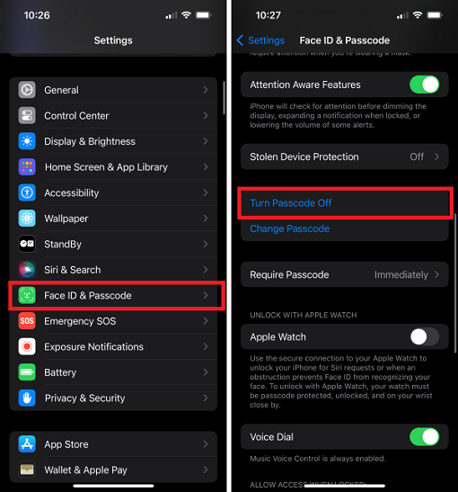
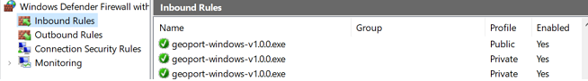

This page is now outdated, but the steps are still very simmiler. I will be posting an update soon for IOS 18
GeoPort is very well setup and a tool that I use very often. This program will spoof your location in Apple/Google Maps, Life360, Pokemon Go, Snap Map, Geocaching, and (I assume) Apple's own servers. It works by simulating the Apple development engine and telling your phone's GPS to be manually set for "App Testing Purposes". GeoPort will stop if you turn off your phone, and sometimes it will just turn off. After you get it running you can unplug it from your PC freely. Have fun and remember "With Great Power Comes Great Responsibility"
I also want to say that I did not develop any of these programs, but I wanted to make a tutorial that covered how to use them becase I had trouble when I first attempted to use them.
How to use GeoPort
- Download the GeoPort launcher for your system
- Download iTunes from Apple's website
It is important to download directly from Apple's website because it allows GeoPort to find the iTunes files easier than if downloaded from the Microsoft store.
iTunes: https://www.apple.com/itunes/download/win64
- Now on your phone go to Face ID & Passcode → Turn the passcode off → then input your phone's passcode to disable the passcode on your phone.

- Now go to and open the file we downloaded earlier; GeoPort.exe. If you get a windows defender popup, click more info → run anyway. If you get a popup asking you to allow on private and public networks allow both. You will see a few windows popup, one with the GeoPort Logo and one with command prompt, but after a moment a new tab will open.
- In the GeoPort web tab that has been opened make sure your device is selected. After that click on connect. If you don't have developer mode enabled on your phone you will get a popup asking you to enable it. Click "ok" and your phone will now restart
- When you phone turns back on, simply open your preferred maps app and click simulate location in GeoPort. If your location moves, then GeoPort has worked! If not, try the troubleshooting steps down below. You can move around the pin to your location or search for a location below. On the map they have you can only set your location to the inital continents shown, the repeating ones do not work.
Troubleshooting
If you are just getting random errors:
- Go to the windows search bar and search for "Windows Defender Firewall with Advanced Security" then open it
- In the inbound rules tab, make sure GeoPort.exe is enabled

- Now close and re-launch GeoPort.exe and try again
If it says "your device is not connected"
If the terminal output begins with "device is not connected" unplug and plug back in your phone, and make sure to trust your device. If that does not work
- Go to windows search
- Search for "Device manager" and open it
- Scroll down to "Universal Serial Bus Devices" and open it
- Right click and uninstall both "Apple Mobile Device USB Composite Device(WeTest)" and "Apple Mobile Device USB Device" then restart your PC
- Re-launch GeoPort.exe and attempt to run the program again